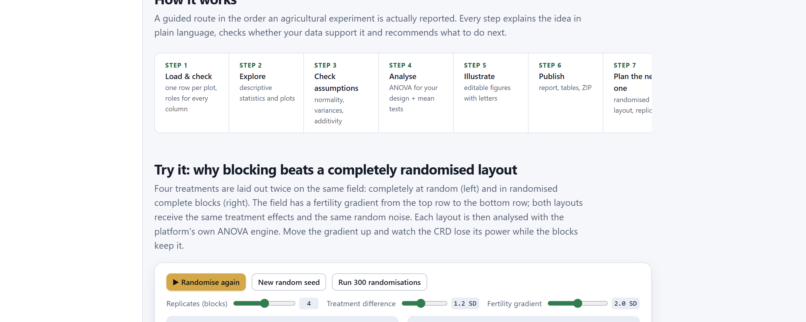
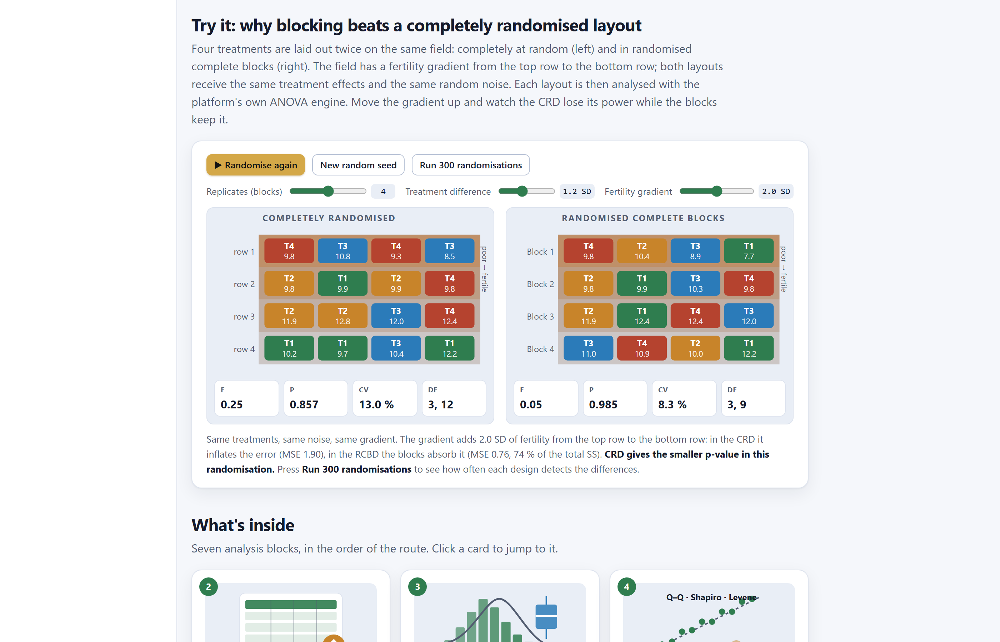
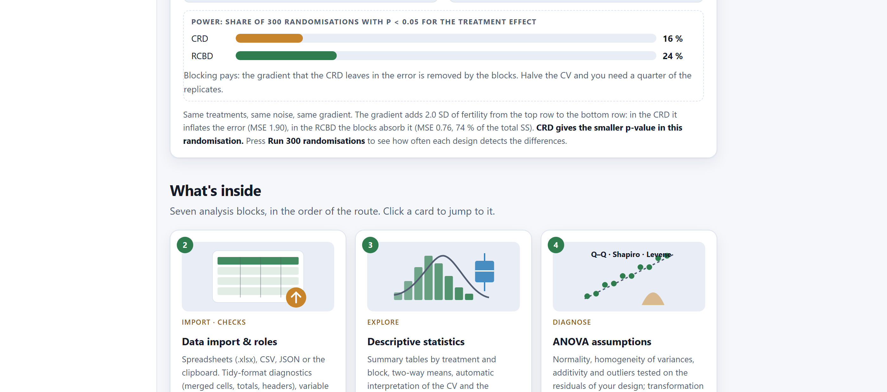
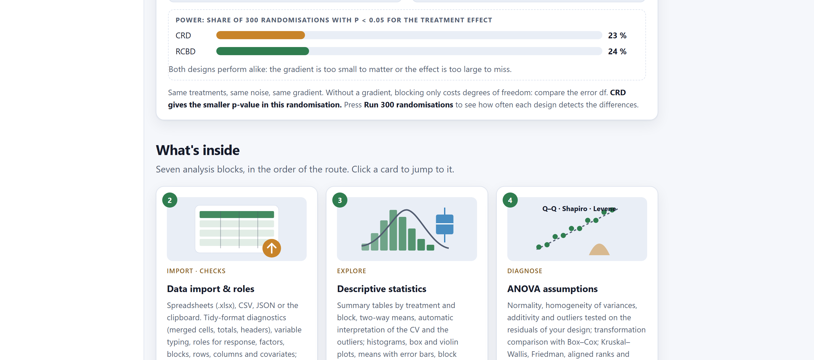
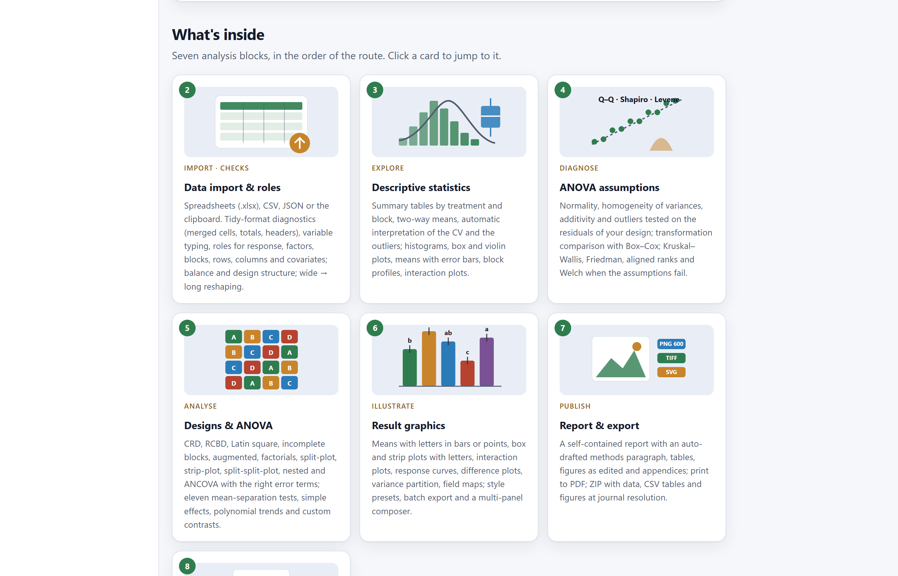
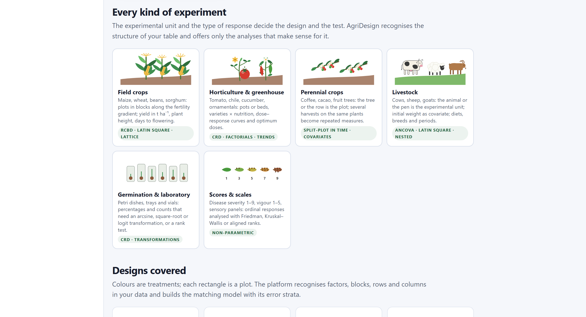
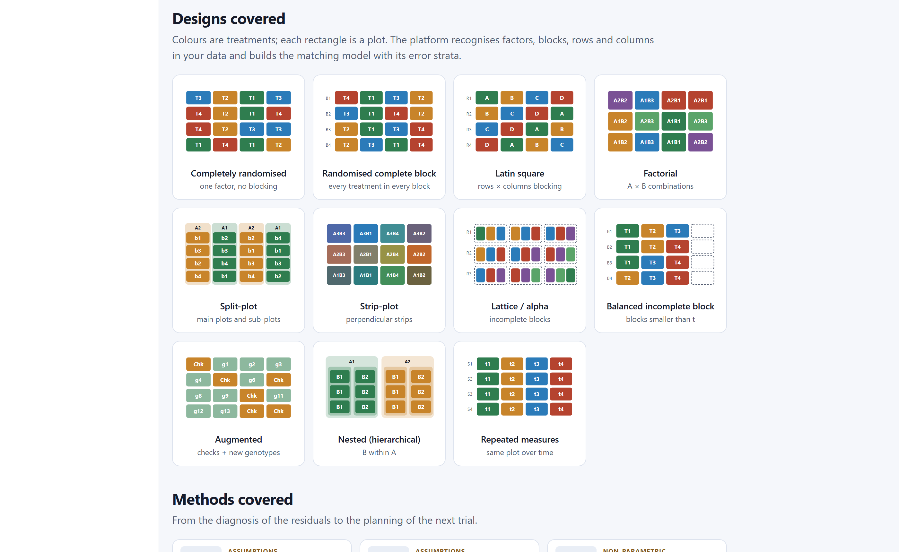
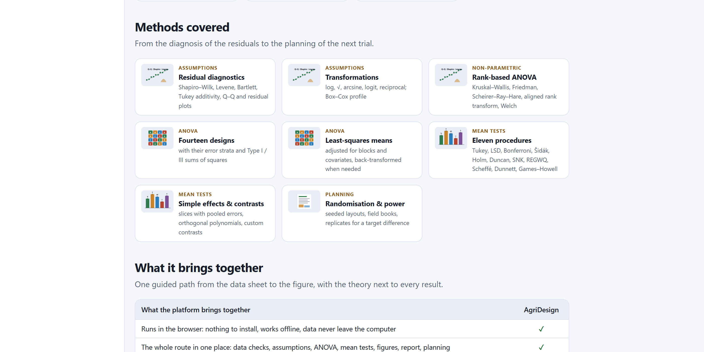
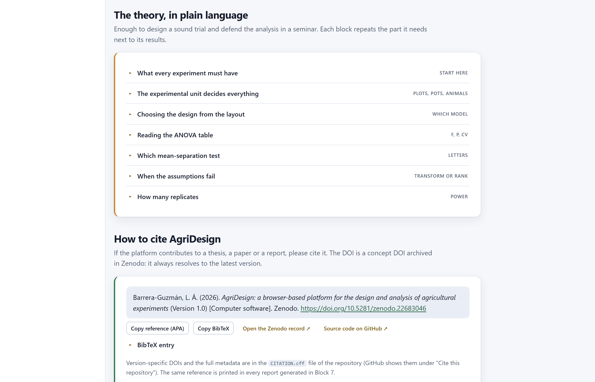
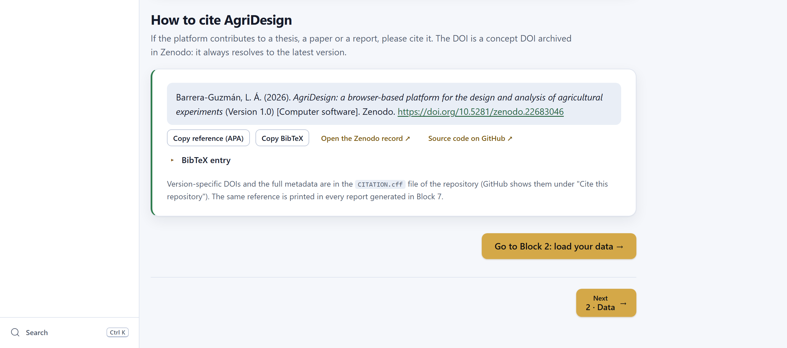

The app’s home page is more than a welcome screen. It is a map of the whole program; a laboratory where you can see, with the app’s own ANOVA engine, how much a trial gains from blocking; a catalogue of the designs and methods it covers; and a summary of the theory you need to defend your analysis.
When you open index.html, Block 1 appears. It reads from top to bottom, like a brochure: first what the program does, then how to work through it, then a simulator to experiment with, the galleries of blocks, kinds of trial, designs and methods, the theory and, finally, how to cite it.
| Section in the app | What it contains | What it is for |
|---|---|---|
| Introduction four buttons and five guarantees | Start with my data, Try the simulator, Read the theory and How to cite; an illustration of a block trial with crops and livestock; the link Open a worked example. | Going straight to loading data, to the guiding example or to any of the sections below. |
| How it works | The seven steps of a trial, from the field book to the next trial (figure 2.1). | Placing each block within the logic of an experiment. |
| Try it: why blocking beats a completely randomised layout | The simulator of blocks versus complete randomisation (section 2.2). | Understanding, through play, what blocking does to experimental error and power. |
| What's inside | One card per analysis block, with an illustration and a description. | Jumping to a block with one click. |
| Every kind of experiment | Six families of trials and the designs that usually go with them. | Confirming that your experiment fits the program (section 1.4). |
| Designs covered | A gallery of eleven designs with their layouts (table 2.6). | Recognising the design you planted. |
| Methods covered | Eight method cards grouped by family (table 2.7). | Seeing at a glance everything that can be computed. |
| What it brings together | The capabilities the program brings together in a single workflow. | Justifying its use in a project or a thesis. |
| The theory, in plain language | Seven collapsible topics with rules of thumb (section 2.4). | Reviewing the theory before interpreting or defending results. |
| How to cite AgriDesign | The citation of the program in APA and BibTeX formats, ready to copy (section 2.5). | Citing it correctly in your paper or thesis. |

| Step | In the app | What is done | Blocks |
|---|---|---|---|
| 1 | Load & check | Load the field book, one row per plot, and give each column a role. | 2 |
| 2 | Explore | Descriptive statistics and exploratory graphics by treatment and block. | 3 |
| 3 | Check assumptions | Normality, homogeneity of variances and additivity on the residuals; transform or switch to ranks. | 4 |
| 4 | Analyse | ANOVA of the design as planted, mean comparisons, trends and contrasts. | 5 |
| 5 | Illustrate | Editable figures with letters, at journal resolution. | 6 |
| 6 | Publish | Report, tables and ZIP package. | 7 |
| 7 | Plan the next one | Randomisation, field layout, field book and number of replicates for the next trial. | 8 |
The four buttons in the introduction are shortcuts: Start with my data opens Block 2, and the other three scroll down to the simulator, the theory or the citation on the same page. The What's inside cards take you to their block, but those that need data stay greyed out until you load a table; Block 8 is always available because it plans trials that do not exist yet. The Go to Block 2: load your data button at the foot of the home page does the same as the first button.
The simulator answers a question every student asks at least once: why block? It lays out the same four-treatment trial twice on a field with a fertility gradient, once completely at random and once in randomised complete blocks, analyses both layouts with the same ANOVA engine that Block 5 uses, and lets you compare them.
Each plot produces a simulated yield: 10 + treatment effect + fertility of its row + noise. The four treatments have stepped effects from 0 to δ (T1 the smallest, T4 the largest), fertility increases from the top row to the bottom row by the amount set on the slider, and the noise is normal with standard deviation 1. The units of δ and of the gradient are therefore standard deviations of the noise. The two layouts share fertility and noise plot by plot; only which treatment falls in each plot changes. In the completely randomised layout, the 16 treatments are drawn over the whole field; in the block layout, each row is a block and the draw is made within it. The ANOVA of the randomised layout has a single term, treatment; the block ANOVA also has the block term, and that term takes up the variation between rows.

1 2 3 4 5 6| Slider | Range | Meaning | If you increase it… |
|---|---|---|---|
| Replicates (blocks) | 2 to 6 | Number of rows in the field; in the block layout, number of blocks. | More degrees of freedom for error and more precise means in both layouts. |
| Treatment difference | 0 to 3 SD | Difference between the best and the worst treatment, in standard deviations of the noise; the other two lie at the thirds. | The effect is easier to detect. At 0 there is no effect, and what is measured is the type I error. |
| Fertility gradient | 0 to 4 SD | How much more the bottom row yields than the top row, in standard deviations of the noise. | The randomised layout loses precision; the block layout is unaffected. |
| Card | What it is | How to read it |
|---|---|---|
| F | Ratio of the treatment mean square to the error mean square. | Close to 1, the treatments vary as much as identically treated plots; large, they vary more. |
| p | P value of the treatment effect in that randomisation. | Below 0.05 (highlighted): the layout detected the effect this time. A single run does not tell you which design is better; that is what power is for. |
| CV | Coefficient of variation: square root of the error mean square divided by the mean, as a percentage. | The precision of the trial. It is the first thing to change when you block. |
| df | Degrees of freedom for treatment and for error. | Blocks cost r − 1 error degrees of freedom: 12 versus 9 with four replicates. |
In the randomisation of figure 2.2, neither layout detected the effect (P = 0.857 and P = 0.985), and in that run the randomised layout even gave the smaller P value. This is to be expected: with a difference of 1.2 standard deviations spread over four treatments, the effect is small and the chance of a single run dominates. What sets the designs apart is how often they detect the effect over many runs, that is, their power. That is why the Run 300 randomisations button is the most important part of the simulator.
The power figures quoted below come from the app itself, with the seed it opens with (300 randomisations per scenario). If you press New random seed you will get similar, not identical, values: power estimated from 300 runs has an error of about ±3 percentage points.


Blocking has a fixed cost, the r − 1 degrees of freedom taken by the block term, and a benefit that depends on how much variation there is between blocks. If the field is uniform, the benefit is nil and the cost is barely noticeable; if there is a gradient, the benefit is large. Since you almost never know in advance that a field is uniform, in the field blocking is the safe bet. In a greenhouse or laboratory with truly homogeneous units, complete randomisation is acceptable and slightly more powerful.
| Replicates | Difference | Gradient | Completely randomised | Randomised blocks | Reading |
|---|---|---|---|---|---|
| 4 | 1.2 | 0.0 | 23% | 24% | Without a gradient, they tie. |
| 4 | 1.2 | 2.0 | 16% | 24% | Default scenario. |
| 4 | 1.2 | 4.0 | 9% | 24% | Complete randomisation sinks; the blocks do not change. |
| 4 | 2.0 | 0.0 | 55% | 56% | Larger effect: more power in both. |
| 4 | 2.0 | 2.0 | 39% | 56% | The blocks detect it almost one and a half times as often. |
| 4 | 2.0 | 4.0 | 20% | 56% | Almost three times as often. |
| 4 | 1.5 | 2.0 | 23% | 34% | Intermediate. |
| 2 | 1.2 | 2.0 | 5% | 9% | With two replicates almost nothing is detected. |
| 6 | 1.2 | 2.0 | 24% | 31% | More replicates help both. |
| 4 | 0.0 | 2.0 | 6% | 7% | No effect: only false positives, close to 5%. |
The block column is the same in every row with the same number of replicates and the same difference, whatever the gradient. In the simulator the gradient runs exactly along the rows and each row is a block, so the block term removes it completely; what is left in the error is only the noise. In the field blocking is never this perfect, because fertility also varies within each block, but the lesson holds: what the block captures leaves the error for good, and what it does not capture stays there. That is why blocks are laid out perpendicular to the gradient, so that each block is as uniform as possible within and as different as possible from the others.
When there is no effect, the proportion of runs with P < 0.05 is the type I error, and both designs keep it close to the nominal 5%. This is what randomisation guarantees: the gradient does not produce false differences between treatments in either layout, because the draw spreads fertility without favouring anyone. What the gradient does do in the randomised layout is hide the true differences. Without randomisation, if for convenience T1 were always sown in the top row, the false-positive rate would soar and no ANOVA could correct it.
| If the experimental units… | then… |
|---|---|
| are in the field, on land with uneven slope, moisture or history | Randomised complete blocks, with the blocks perpendicular to the gradient. |
| have two crossed gradients (rows and columns, animals and periods) | Latin square, if the number of treatments allows it. |
| are handled in different batches, days or lots | Each batch is a block, even if the land is uniform. |
| are pots on a uniform bench or animals of the same weight and age | Complete randomisation; you gain degrees of freedom and lose nothing. |
| are so many that a block cannot hold all the treatments | Incomplete blocks (lattices, alpha designs), Block 5. |
When in doubt, block: the cost is r − 1 degrees of freedom; the benefit can be half the error.
The simulator is designed to be projected. A sequence that works well: show the default scenario and ask which layout students prefer; run the 300 randomisations; raise the gradient and repeat; lower the difference to zero to discuss the type I error; and close with the maize and nitrogen example of Block 5, where the block effect is real (F = 21.69, P = 0.0002).
Below the simulator, the home page shows four galleries. They are the program’s catalogue: they tell you whether your experiment fits and what it is analysed with, and the block cards take you straight to each block.



| In the app | Model | Typical case |
|---|---|---|
| CRD | y = μ + treatment + ε | Pots on a bench; homogeneous animals fed individually. |
| RCBD | y = μ + block + treatment + ε | Field plots with a gradient; work batches. |
| Latin square | y = μ + row + column + treatment + ε | Two crossed gradients; animals × periods. |
| Factorial | y = μ + [block] + A + B + A×B + ε | Variety × fertilisation; breed × diet. |
| Split-plot | Main plot with its error (a) and sub-plot with its own (b) | Irrigation or tillage on main plots, varieties within them. |
| Strip-plot | Horizontal and vertical strips, three errors | Two factors applied with machinery in crossed strips. |
| Lattice / alpha | Incomplete blocks within replicates; intra-block analysis | Variety trials with 20 to 100 entries. |
| Balanced incomplete block | Blocks smaller than the number of treatments, balanced by pairs | Sensory panels; trials with few units per block. |
| Augmented | Checks replicated in blocks and new entries without replication | Early generations of a breeding programme. |
| Nested (hierarchical) | B nested within A | Seed lots within varieties; pens within farms. |
| Repeated measures | Split-plot in time | Several harvests from the same coffee bush; monthly weights of the same animal. |

| Family | Card | Content | Block |
|---|---|---|---|
| Assumptions | Residual diagnostics | Shapiro–Wilk, Levene, Bartlett, Tukey’s additivity test, Q–Q and residual plots. | 4 |
| Assumptions | Transformations | Logarithm, square root, arcsine, logit, reciprocal; Box–Cox profile. | 4 |
| Non-parametric | Rank-based ANOVA | Kruskal–Wallis, Friedman, Scheirer–Ray–Hare, aligned ranks, Welch. | 4 |
| ANOVA | Fourteen designs | The designs in the catalogue with their error strata and type I and III sums of squares. | 5 |
| ANOVA | Least-squares means | Means adjusted for blocks and covariates, back-transformed when needed. | 5 |
| Mean comparisons | Eleven procedures | Tukey, LSD, Bonferroni, Šidák, Holm, Duncan, SNK, REGWQ, Scheffé, Dunnett, Games–Howell. | 5 |
| Mean comparisons | Simple effects & contrasts | Slices with combined errors, orthogonal polynomials, custom contrasts. | 5 |
| Planning | Randomisation & power | Seeded layouts, field books, replicates for a target difference. | 8 |
The home page speaks of fourteen designs, while the gallery shows eleven layouts. The difference lies in the variants chosen within Block 5: the generalised block (several plots per block and treatment), the split-plot in a completely randomised design and the split-split-plot. Analysis of covariance does not count as a design: it is a covariate added to any of them.
The The theory, in plain language section brings together seven collapsible topics. They are no substitute for a course on experimental design, but they are enough to plan a sensible trial and to defend its analysis in a seminar. Each block repeats, next to its results, the part it needs.

| Topic in the app | Central idea | Taken up again in |
|---|---|---|
| What every experiment must have | Replication, randomisation and local control. The standard error of a mean is s/√r; measuring the same plot several times is not replication. | Ch. 1, §1.3 |
| The experimental unit decides everything | The unit is whatever receives the treatment independently: the plot, the pot, the pen when all the animals eat from the same feeder. Counting animals as replicates when the pen was treated invents significance. | 2 |
| Choosing the design from the layout | A table that goes from the layout in the field to the design: one gradient, blocks; two, Latin square; one factor on main plots and another within them, split-plot; many treatments, incomplete blocks; a measurement taken beforehand, covariate. | 5 |
| Reading the ANOVA table | Each F is compared with its own error; in a split-plot there are two. The CV measures precision: 10 to 20% is normal for field yield. A significant block says nothing about the treatments: it says that blocking was worthwhile. | 5 |
| Which mean-separation test | Tukey by default; LSD only after a significant F and with few treatments; Duncan, less and less accepted; Dunnett against a control; Scheffé for contrasts chosen after seeing the data; Games–Howell with unequal variances. For quantitative factors, a curve and an optimum, not letters. | 5 |
| When the assumptions fail | Assumptions are checked on the residuals. Unequal variances do more harm than imperfect normality. Counts, square root; percentages, arcsine or logit; multiplicative effects, logarithm; ordinal scales, ranks. | 4 |
| How many replicates | The number of replicates depends on the CV and on the difference you want to detect. Reducing the CV is usually cheaper than adding replicates. At least 10 to 12 degrees of freedom for error. | 8 |
| Your experiment has… | Design | Typical case |
|---|---|---|
| One factor, homogeneous units, no gradient | Completely randomised | Pots on a bench; animals of the same weight |
| One factor, one known gradient | Randomised complete blocks | Slope of the land; litter or barn; sampling day |
| One factor, two gradients | Latin square | Rows × columns of the field; animals × periods |
| Two or more factors studied together | Factorial, completely randomised or in blocks | Variety × fertiliser; breed × diet |
| One factor on main plots and another within them | Split-plot | Irrigation × varieties; pasture × stocking rate |
| Many treatments, blocks that cannot hold them all | Incomplete blocks (lattice, alpha) | Variety trials with 20 to 100 entries |
| A numeric variable measured before treatment | Any of the above + covariate | Initial weight; plant stand; soil analysis |
This is the same table the app shows under Choosing the design from the layout; the Block 5 chapter develops it design by design.
If AgriDesign helped you with a thesis, a paper or a technical report, cite the program: that way readers know which tool and which version produced the calculations, and others can repeat them. Name the statistical methods you used (the design, the mean-comparison test, the transformation) in the text exactly as the app names them in its results and in the methods paragraph of the report.

The digital object identifier (DOI) in the citation, 10.5281/zenodo.22683046, is the concept DOI: it always resolves to the latest version of the program. Each version also has its own DOI, shown in that version’s record in the archive; the one for version 1.0 is 10.5281/zenodo.22683047. Cite the concept DOI together with the version number; if the journal requires that anyone be able to retrieve exactly the version you used, cite that version’s DOI. The DOIs of every version and the full metadata are in the repository’s CITATION.cff file, which GitHub displays under Cite this repository.
Citing the program is not enough for another researcher to repeat your analysis. State in the methods the AgriDesign version, the design and the fitted model, the type of sums of squares, the mean-separation test and its α level, the transformation if there was one and, for layouts generated in Block 8, the random seed. The automatic report of Block 7 drafts that paragraph with the values you actually used.
With the home page, the simulator and the theory at hand, the next step is to load your own data. The Block 2 chapter explains what a field book should look like, the formats the app accepts, the table check, the variable roles and the wide-table converter, with the maize and nitrogen example step by step.